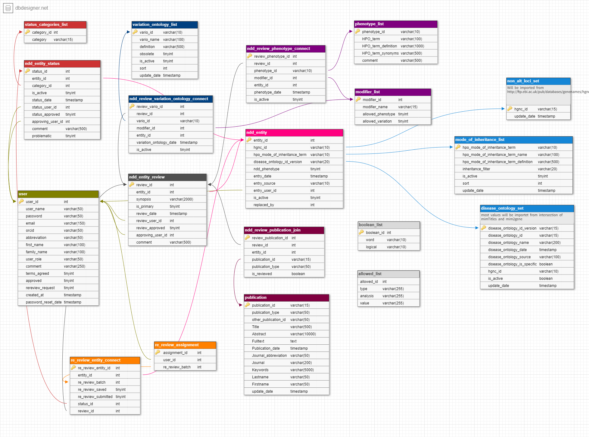

Chapter | 4 Database and data sources
4.1 Database software
SysNDD currently uses the open-source MySQL 8.0 relational database management system (RDBMS). The database runs in a docker container using the official mysql docker image (version 8.0.29).
4.2 Database schema
The design of our DB schema can be viewed in DB DESIGNER:
As of 2022-06-07 the database schema looks like this:

SysNDD MysQL database